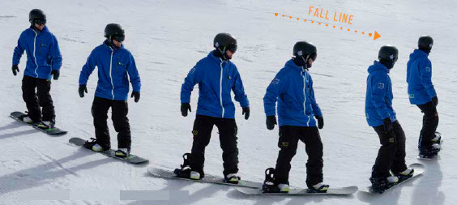
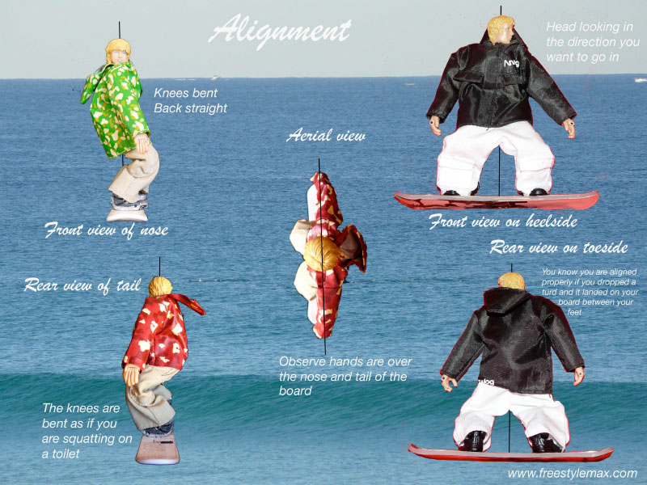
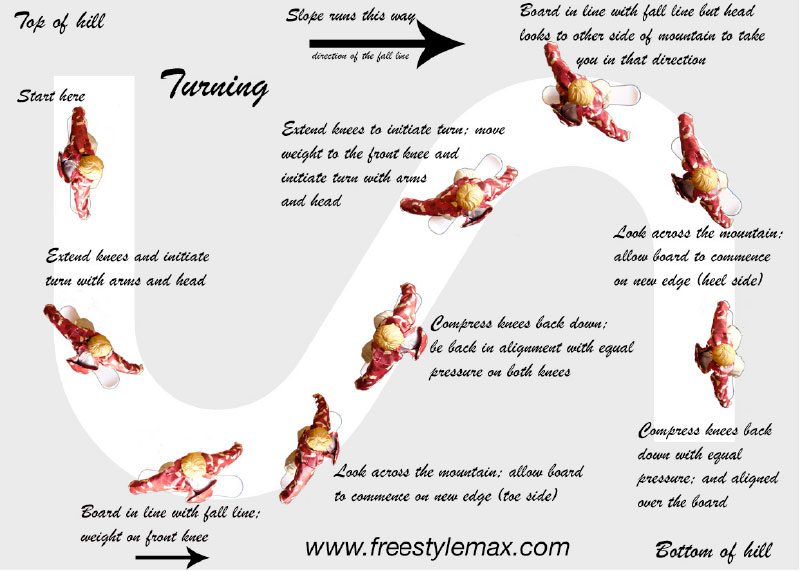

Snowboarding starts with learning to slide down the slope with your board horizontal to the slope. Once comfortable on the board slipping down the slope, start turning the board with your hips. Face down the slope.
You need to insure you are controlling your weight and alignment with the board.
Beware of the edges of the board. If a edge is caught you can flip yourself down the slope! To avoid catching an edge lean towards the top of the piste. Shifting weight is essential to being able to turning effectively. The below image shows each stage of turning in detail.
Once turning has been mastered you well also be able to stop at will. This will open the door for jumps and tricks. When attempting them, remember the position of the edges, you do not want to catch one after a jump or trick.